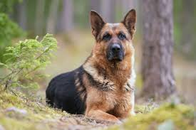

Bem-vindo ao nosso blog sobre cachorros de estimação! Neste espaço, você encontrará
informações e dicas úteis sobre como cuidar do seu melhor amigo canino.
Cuidados Pets
[Pesquisa de Raças]
Cuidados básicos com o seu cachorro
Alimentação: uma alimentação adequada é essencial para a saúde do seu
cão. Dê a ele ração de qualidade e evite dar comida humana, que pode
causar problemas de saúde.
Higiene: banhos regulares, escovação dos pelos e limpeza dos ouvidos são
importantes para manter o seu cachorro limpo e saudável.
Vacinas e vermifugação: mantenha a carteira de vacinação do seu cachorro
atualizada e faça a vermifugação regularmente para prevenir doenças.
Passeios e exercícios: os cachorros precisam de exercícios físicos diários
para manter a saúde e a felicidade. Leve-o para passear e brincar
regularmente.
Consultas ao veterinário: consulte regularmente um veterinário para
garantir que seu cachorro esteja saudável e receba os cuidados
necessários.
>
Labrador Retriever
Uma das raças mais populares do mundo, o labrador é conhecido por ser amigável, leal e inteligente.
Golden Retriever
Outro favorito popular, o golden retriever é um cachorro amigável e afetuoso que adora brincar.
Poodle
Uma raça inteligente e brincalhona, o poodle vem em três tamanhos diferentes e é uma ótima opção para pessoas com alergias.
Bulldog Inglês
Um cachorro amigável e leal, o bulldog inglês é uma raça tranquila e de baixa energia.

Pastor Alemão
Uma raça inteligente e corajosa, o pastor alemão é frequentemente usado como cão policial ou de guarda.
Dicas para treinamento de cachorro
Use reforço positivo: recompense seu cachorro quando ele fizer algo certo, em vez de puni-lo quando ele fizer algo errado
Seja consistente: use os mesmos comandos e treinamentos todos os dias
para que o seu cachorro entenda o que é esperado dele.
Não desista: treinar um cachorro pode ser difícil, mas é importante ser
persistente e continuar tentando.
Envolva toda a família: todos devem participar do treinamento do cachorro
para que ele entenda o que é esperado dele.
Considere a ajuda de um profissional: se você estiver tendo dificuldades
com o treinamento do seu cachorro, pode ser útil procurar a ajuda de um
treinador profissional.
Esperamos que estas informações e dicas tenham sido úteis para você e seu
cachorro. Lembre-se, cuidar de um cachorro é uma responsabilidade importante,
mas com amor e atenção, você pode desfrutar de uma vida feliz e saudável com
o seu melhor amigo peludo.
Informações sobre Raças
Selecione uma raça abaixo para ver informações basicas: